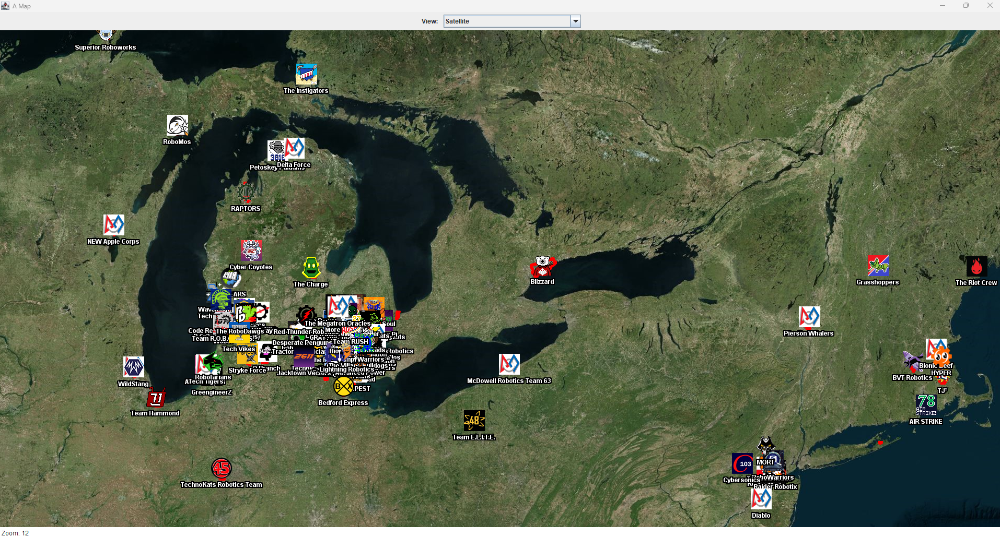

2026 Week 18/19 Updates
Posted May 13 2026
Sorry for forgetting about the past 2 weeks. For Week 18 I just forgot and Week 19 I felt too sick to try and do much.
Here's what I've been working on:
The Game
I decided to add a new menu, trying to overhaul the battle system itself. I also knew that as I had a showcase for my school coming up that I would turn it into a tech demo. However it didn't wind up being my showcase project for my school, it was instead my open source project.
After The showcase, I made a script to allow for the battle system to read a file for each battle scenario, such as a tutorial. I also updated the protagonist's Spritesheet to allow for less overlay of pixels when the protagonist's idle animation was playing.
The Open Source Project
I made quite a few changes, I actually made the project be able to accept regular GeoJSON files rather than whatever modified stuff I had going on before. And of course, I also added a lot more teams.
During the showcase, I also changed the zoom from about 8 to 12, so you can see how clustered the teams are together.

I also changed the buttons to now have an icon related to the teams.
That's really all I did for those 2 weeks, I will attempt to try and get Week 20 Posted with what I have Saturday. I'm also tempted to add more buttons to the top.